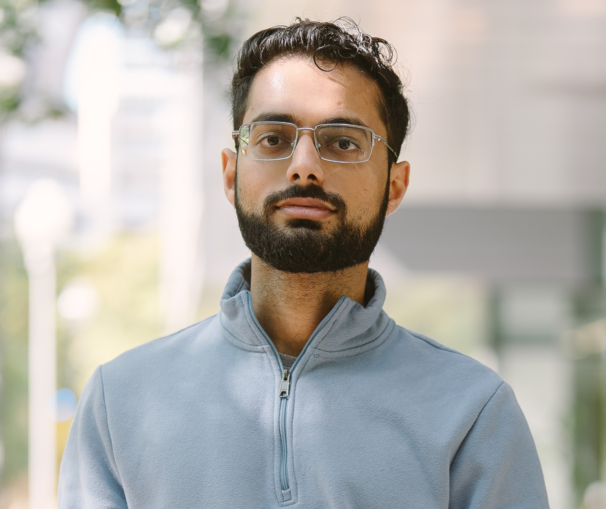

Ph.D. student @ MIT CSAIL
Email: varuncg@mit.edu

I develop reusable mechanisms that enable safe and efficient integration of machine learning into computer systems. My current focus is on making ML-driven systems resilient with uncertainty estimation, and building agents for computer system design and operation.